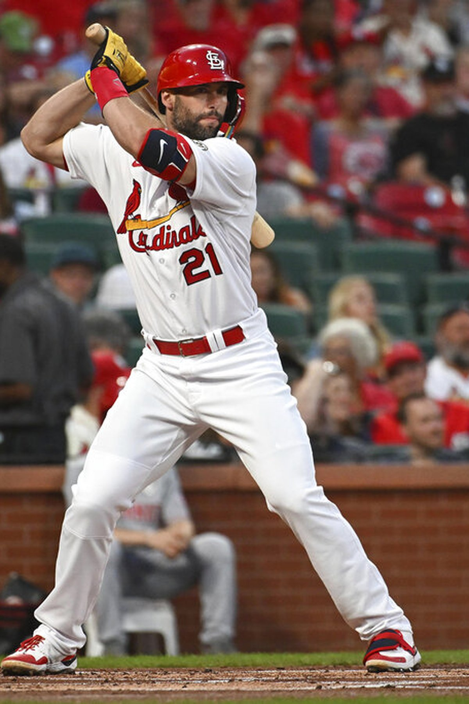
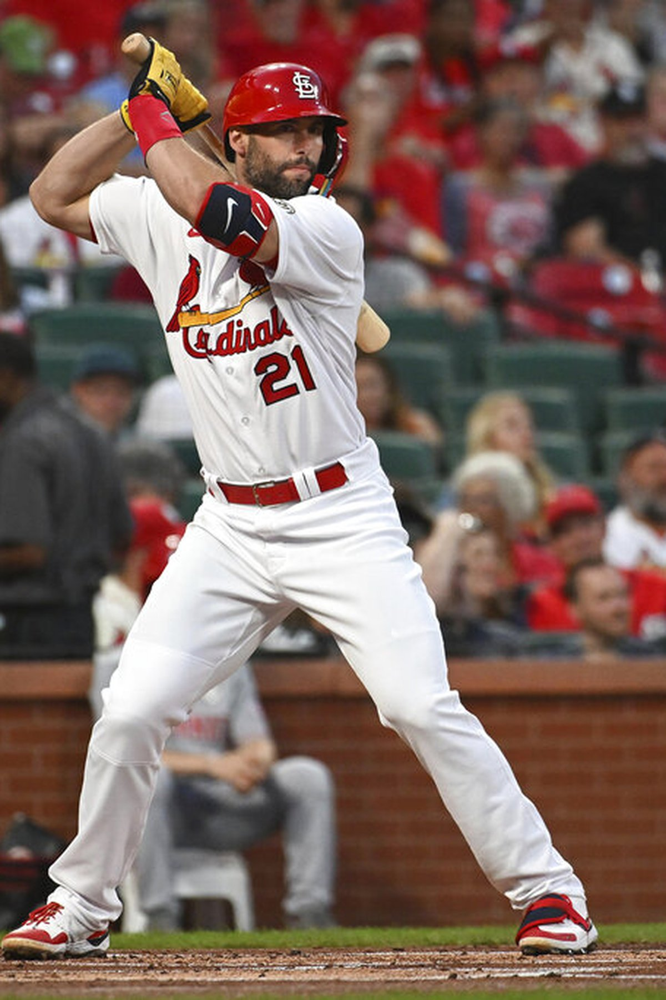

About Paul Goldschmidt
Paul Goldschmidt is a professional baseball player who currently plays first base for the St. Louis Cardinals. He is a six-time All-Star and has won three Gold Glove Awards and four Silver Slugger Awards. In his free time, he enjoys spending time with his dogs, two Labrador Retrievers named Maverick and Brinkley.